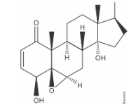

Bem vindo ao Quiz
Funções Orgânicas
Questão 1
O ácido salicílico foi originalmente descoberto devido às suas ações antipirética e analgésica. Porém, descobriu-se, depois, que esse ácido pode ter uma ação corrosiva nas paredes do estômago. Para contornar esse efeito foi adicionado um radical acetil à hidroxila ligada diretamente ao anel aromático, dando origem a um éster de acetato, chamado de ácido acetilsalicílico (AAS), menos corrosivo, mas, também, menos potente.
A estrutura química do ácido salicílico, representada acima, apresenta
A)funções orgânicas éster e álcool.
B)funções orgânicas fenol e álcool.
C)um carbono com hibridação sp3.
D)funções orgânicas fenol e ácido carboxílico.
Questão 2
A glicose e a frutose são as substâncias responsáveis pelo sabor doce do mel e das frutas. São isômeros, de fórmula C H O . 6 12 6.
Na digestão, a frutose é transformada em glicose, substância capaz de gerar energia para as atividades corporais. Essas substâncias são chamadas de hidratos de carbono ou carboidratos.
Glicose e frutose possuem respectivamente os seguintes grupos funcionais:
A)álcool e ácido carboxílico; álcool e cetona.
B)álcool e aldeído; álcool e cetona.
C)álcool e cetona; álcool e ácido carboxílico.
D)haleto e aldeído; álcool e cetona.
Questão 3
A destilação seca da madeira é um processo bastante antigo e ainda muito utilizado para a obtenção de metanol, tabém chamado de 'espírito da madeira'.A respeito do metanol, assinale a alternativa correta.
A)É um poliol e sua nomenclatura oficial é álcool metílico.
B)Pertence à função aldeído e é de cadeia insaturada.
C)Pertence à função álcool, sua massa molar é de 32 g e sua fórmula molecular é CH OH.
D)Pertence à função cetona e é de cadeia saturada.
Questão 4
A Prednisona é um anti-inflamatório indicado para o tratamento de doenças endócrinas, respiratórias, dentre outras. Sua estrutura está representada abaixo.
É uma função orgânica presente na estrutura da Prednisona:
A)Éster
B)Cetona
C)Aldeído
D)Enol
Questão 5
Um trabalho publicado na Nature Medicine, em 2016, mostrou que Withaferin A, um componente do extrato da planta Withania somnifera (cereja de inverno), reduziu o peso, entre 20 a 25%, em ratos obesos alimentados em dieta de alto teor de gorduras.

A) ácido carboxílico e cetona.
B) aldeído e éter.
C) cetona e hidroxila alcoólica.
D) cetona e éster.